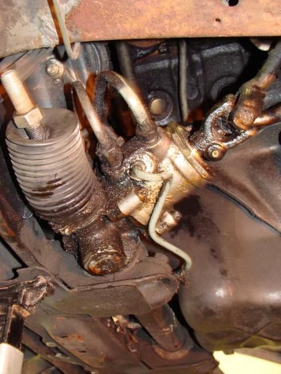

-
I'm working on front suspension and think this is probably the right time to address my power steering leakage. From the picture below, it appears PS fluid leaks just about everywhere… what do folks recommend for repairs of this type problem? I've read through PS delete threads, and I'm not into that. I would rather just fix the leaks. I assume it's seals on the rack & pinion, just wondered if anyone knows of other typical problems with the PS system. Do folks rebuild the R&P or just replace it with a reman from the parts place?
My mess…
'86 NA - original owner (1986-93) and final owner (2005-present)
My build thread: http://z31performance.com/showthread…-Got-mine-back
-
You'll probably catch this in the other thread but you can likely get the rack rebuilt locally for less than rockauto or whatever. Though seriously, unless you have to do really small underground parking lots every day, if you are going to replace the rack just remove the PS because that's 80 per cent of the work and 100 per cent of the hard work. The car's so much more fun to drive. -
This is a problem that every Z31 has, I put my replacement off for 25 years with gallons of stop leak and lots of extra power steering fluid. Finally totally gave up the farm 5 years ago and I bought a rebuilt from a local person who gives 5 year warranty. Since I do not wrench myself my local mechanic in the Bay Area got the job, he charges $88 an hour, I know the horror of it, but in the Bay Area the Nissan stealership gets $165 and Infiniti gets nearly $200.
Pretty straightforward job (I have neither the talent or interest in doing it myself) but the biggest thing is to get a good rebuilt or have yours rebuilt by someone that has a good reputation. my local mechanic has installed tons of these rebuilds and has zero issues. I had a rebuilt from Pep Boys on an old Maxima from the PO and it only lasted 2 years. Mine 5 years later made the car some much nicer to drive and solid. -
I would clean it very good and check in in 100 miles. It can be as easy as a fitting. To me the shaft going in, looks like the seal is done and maybe one other leak.
Mine leaks here and there, 7 drops sitting for a month. It leaks more when its in the air though lol. Im leaving it. Its the only leak under there.My Build Thread -
That's my mental image of the before/after here…Originally posted by badq45t View Post
I did consider doing that… it's just that this is a PITA to get at … I'm going to have everything off the front end, and since I'm replacing the tie rod ends already, it just seems like the right time to yank it out and fix it or replace it. Also - I won't probably be putting any miles on it for a while since I'm still not sure the engine is a runner…Originally posted by 862sik'86 NA - original owner (1986-93) and final owner (2005-present)
My build thread: http://z31performance.com/showthread…-Got-mine-back
-
Is it leaking from the plug or is it leaking from the unit. Mine leaked from the plug for a while then I swapped in new fluid and tried atf+4 and there were no more leaks. Might want to give that a shot.Usual Z31 suspect: Garage Queen (aka broken)


Copyright © 2006–. All rights reserved. Privacy Policy